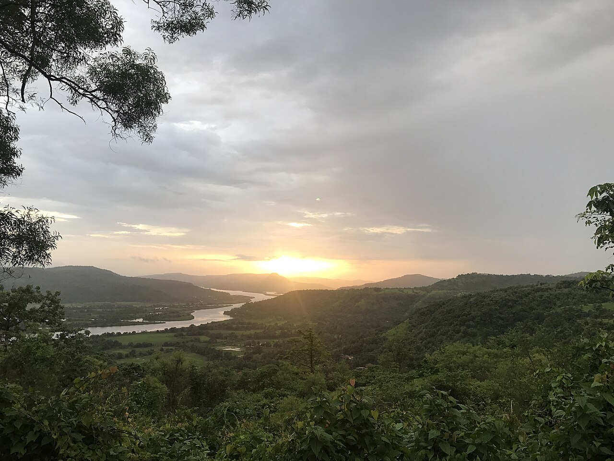
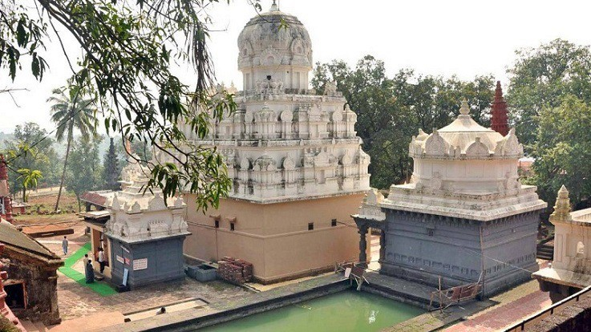
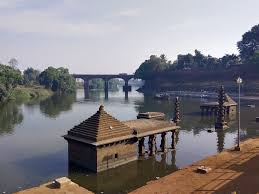
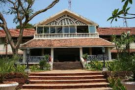
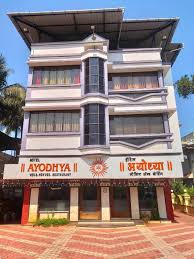

Chiplun is a scenic town on the Vashishti River, known for its natural beauty, temples, and riverside culture.

A beautiful river flowing through Chiplun, perfect for scenic walks.

Historic temple dedicated to Lord Parshuram, on the river’s banks.

A riverside ghat where the waters meet and locals gather.

rating: 4.4 | ₹2800 per night

rating: 4.1 | ₹2200 per night